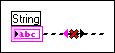
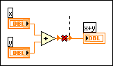

Wire has loose ends
Some ends of the wire are not connected to anything.


You can correct this error in the following ways:
- Right-click the wire and select Remove Loose Ends from the shortcut menu.
- Connect the wire to a terminal.
- Select the structure or area of the block diagram that contains the broken wire and select Edit»Remove Broken Wires from Selection.